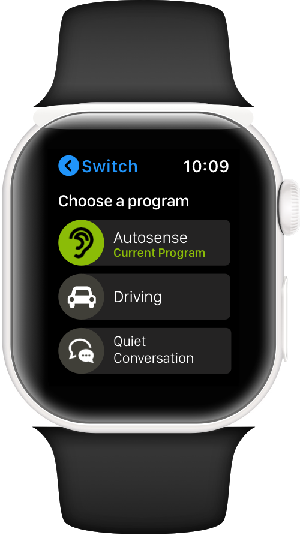
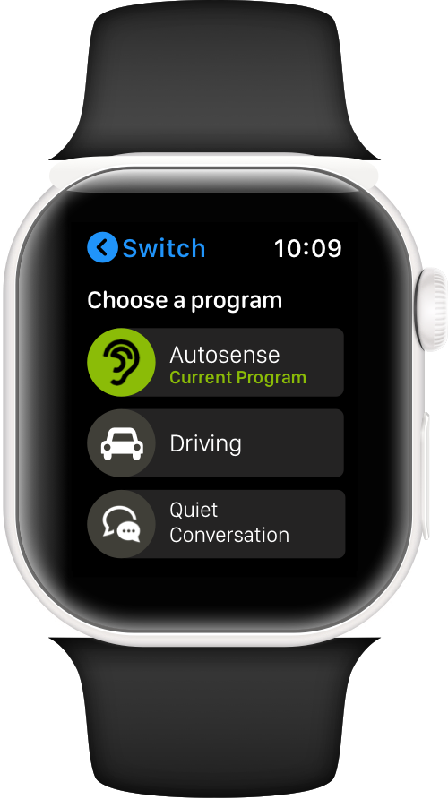

About Me
I'm a product designer currently studying Systems Design engineering at uWaterloo. I strive to make the design process collaborative in order to create products that are both innovative and tangible. I've been a designer for Ceridian and Sonova, during which I've specialized on mobile and smartwatch applications.
Outside of design work, I enjoy playing board games, learning languages, and drawing. You can view some of my work on this site and here.
View Resume


Ceridian Mobile Design
Overview
This is some sample text to figure out how much there is.
Challenge
Research
MVP
Iterations
Lessons Learned
H.I. Smartwatch App
 

Overview
MyPhonak is an iOS and Android app that is centered around enhancing the overall user experience of owning a Phonak hearing instrument (H.I.). It allows users to remotely adjust the volume of their hearing instrument, or change its listening mode based on the environment.
Challenge
Within a 2 week design sprint, create a smartwatch application that fulfills the role of the MyPhonak iOS and Android app.
Methods Summary
- User Interviews
- Heuristic Analysis
- Secondary Research
- Usability Testing
- Personas
Tools
- Sketch
- Invision
Research
Heuristic analysis
To determine some of the current areas in which the Wearable app could improve upon the mobile version, we performed a heuristic analysis of the MyPhonak App against Nielsen's 10 heuristics for user interface design. The app was tested while using wearing hearing aids for an accurate experience. The areas in which the application could be improved were logged.
Forum Digging
A large number of reviews (both positive and negative) were examined to determine the major pain points that a wearable application could improve upon.
Ergonomic Considerations
As the primary users of the Phonak hearing aids are older adults, it was important to conduct some analysis into making the application physically accessible, especially due to the screen size of wearable devices.
User Interviews
Hearing from primary users is paramount to creating a solid user experience. For this reason, we conducted user interviews with older adults that use hearing aids as well as audiologists who are responsible for selling and maintaining hearing aids and other peripheral tools/applications.
Personas
The background research was distilled into the two most relevant personas for the use case. This would help keep discussions and solutions user-focused.
Planning
Translating the research findings into a usable prototype began with sketching out the rough appearance and location of elements as well as mapping out the general flow of the app.


These sketches were then translated into higher fidelity mockups in Sketch.
Validation
The mockups were translated into a prototype app that was downloaded onto an Apple watch. We conducted usability testing sessions with 4 hearing aid users, 3 of which were active smartwatch users. From these interviews, we were able to identify what the current smartwatch application did well and elements that could improved upon.
Next Steps
In its completed state, the application will require background bluetooth pairing capabilities to provide a worthwile user experience. At the time that this prototype was created, these capabilities were in development for the near future. The project displayed the potential that hearing instruments controlled in tandem with a smartwatch. The takeaways from this design sprint were thus documented for future use.

Callisto-361
A synthesizer interface designed to be completely accessible for the blind
Challenge
As a project for an Engineering Design course, I worked in a team of 6 as a designer to create an accessible instrument. We tackled the following problem statement:
"Design a synthesizer interface that will be accessible and engaging for users who are or who have recently become completely blind allowing them to perform expressive and interesting electronic music."
Our team tackled this project using iterative design methods, gradually developing our instrument by applying the learnings gained after each iteration. Between each iteration was a round of user testing and background literature review to gain these insights. We had the incredibly fortunate opportunity of conducting user testing with blind users to truly make a design built for its users. You can view the iterations below.
First Iteration
Our first iteration tested the idea of a modular interface, allowing the user to customize the position of controls to suit their needs. However, testing with blind users demonstrated that this actually made it difficult to create an initial mental map of the interface. There was no single source of truth the user could reference for the layout, such as a manual or guidebook.


Key Learnings from user testing
Second Iteration
Our second iteration focused on a single, more traditionally structured synthesizer interface, with the underlying distinction being that each control on the interface was unique. A large variety of types of controls was utilized, including dials, buttons, sliders, and joysticks. Additionally, controls were made with different materials, resulting in a different overall texture. To add to these differences, symbols were grafted on the tops of controls. The functionality of each control was prioritized to make distinct changes to the sound, providing the user with more feedback.


Key Learnings from user testing
Final Iteration
Our final solution consisted of a synthesizer interface in which every control was physically unique in multiple dimensions. Dials had both different shapes and texture, and buttons had different numbers of bumps on them for differentiation. Braille labels were placed under each control to identify their function to the user. Controls that were commonly utilized together were placed next to one another, but enough space was given between controls to minimize unintentional inputs. The interface was compact in design, putting all controls within the 5th percentile for the maximum reach envelope of the seated female population, allowing them to all be operated without needing to reach forward. To validate that our solution solved the problem, our team performed user testing on blind users as well as blindfolded participants who had not yet seen the interface.


The design would be “successful” if users were able to identify all controls without sight, as well as determine the state of each control (e,g, the angle of a dial) without sight. Our current solution did a great job at having distinct inputs, but certain controls such as the dotted buttons were not easily distinguished. However, as a medium-fidelity prototype, the solution moved in the right direction from the second prototype, and thus qualified as a success.
Charge Champs
Video game design has always been a passion of mine. For the past three years, I've been building games together with some of my talented friends. It's been a great exercise in understanding what makes a game fun and playable. Our latest project is a game called "Charge Champs", a multiplayer fighting game inspired by some of the games we love. I've been working on character art and the player UI. Check it out in action below

There's definitely still a lot to work on, but we have come a long way since the beginning of the project. Below is a sample UI work I have done while working on the project.